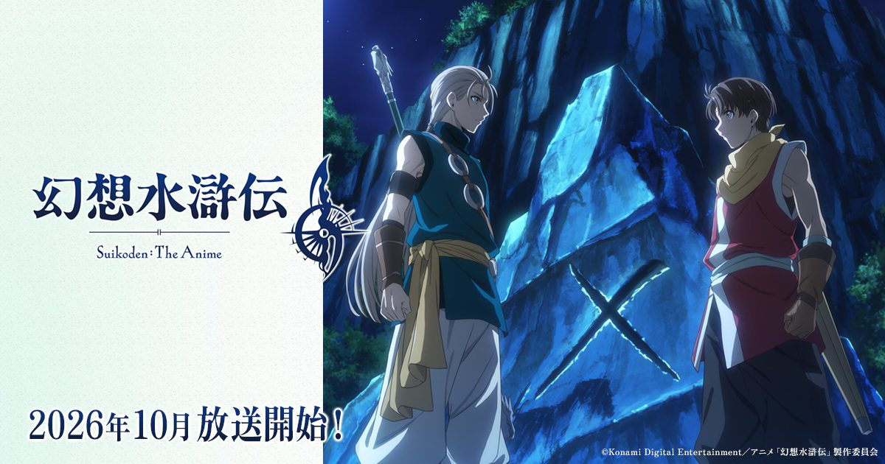

2026-10-24 · 动画深读
今晚（10 月 24 日），《幻想水浒传》动画会在日本播出第 4 集；英文版要等到下周二（10 月 27 日）才在 YouTube 更新。 这部作品从 10 月 3 日起在 TOKYO MX、关西电视台、BS 朝日等全国 32 局开播，由科乐美自己的动画部门 KONAMI animation 制作，全 23 集。 但我们想聊的，不是「经典 JRPG 终于动画化了」，而是这个 IP 身上一个几乎没人正面拆过的问题——它的招牌从来不是剧情，而是「把 108 个人招进来」；而动画这件事，恰恰把「玩家主动去招募」这一步删掉了。

它的播出结构本身就是一次很罕见的安排。常规做法是电视首播或平台首发二选一，本作却是三层的： 8 月 21 日起，第 1～3 话先在日本 10 家影院做了两周的「先行 premium 上映」（8 月 23 日还在新宿 Piccadilly 办了五位主要声优登台的舞台问候）； 10 月 3 日，同样的内容以「第 1 话 60 分钟扩大特别篇」的形式回归电视； 之后每周维持电视周六播出、海外 YouTube 延后到周二更新的节奏。
这个设计不是炫技，是有明确目的的。对一个「在海外有名但其核心粉丝已经上了年纪」的老 IP 来说，一次性放完只能换来一波讨论；拆成院线 → 电视 → 全球免费流媒体三层，等于制造三次互相喂养的舆论波峰。 Anime News Network 是在 8 月看了那段 94 分钟的先行剪辑版之后发的先行评测，比绝大多数观众的正式日期早了六周——这正是制作方想要的：让口碑在还没开播的时候就位。
先摆事实。Staff 方面：导演サトウユーゾー，系列构成土屋理敬，动画角色设计山内辽，而「游戏角色设计 石川史」与「动画角色原案 铃木新」两个位置都挂着 KONAMI 的名字——也就是说，这一次的美术不是外包团队照着攻略本临摹，原厂的人坐在位置上。 音响监督是岩浪美和，音乐由中村弘二担任，他同时也是片尾曲《closed eye sun》（feat. たかはしほのか）的作者；片头则是 amazarashi 的《悲しみさえ大人びて》，主唱秋田弘在留言里坦承自己是原作粉丝，还说「当年我跟那些少年一起热血，如今却读出这是一个孩子被卷进战争的悲剧」。 企画栏上写着 NBCUniversal Entertainment Japan，制作人 Ryo Hino 正是该社动画与音乐制作部出身——一家音乐厂牌的人在做一部游戏改编动画的制作统括，这个组合本身就解释了它为什么在歌曲上给得这么齐整。
更值得注意的是那份声优名单。除了リリュウ（熊谷俊輝）、ジョウイ（土屋神葉）、ナナミ（日原あゆみ）这三位少年线主角，以及ビクトール（小西克幸）、フリック（中村悠一）这些开局就登场的熟脸之外， 名单里还塞进了 シード（松冈祯丞）、クルガン（笠间淳）、レックナート（潘めぐみ）、ルック（村濑步）、シュウ（大塚刚央）、アナベル（泽城美雪）等等一批在原作里属于中后期才会见到的人物。 动画还没播就先公布到这个深度，通常只有一种解释：制作组打算把这些人的位置都留下来，而不是砍掉——这就直接把我们推到了这篇文章真正的主题上。
《幻想水浒传 II》的价值感建立在什么之上？不是战斗系统，也不是主线有多曲折，而是「一支从两个少年开始的队伍，慢慢长成一座城堡」这个过程。 108 颗宿星既是收集目标，也是叙事引擎：在游戏里，几乎每一名同伴的登场都伴随着一段招募对话、一个前置条件、一次跑图。你要消耗自己的时间去把他们找齐，而游戏也用「集齐才能看到完美结局」回报你。 换句话说，在原作里，承担「介绍这些角色」这个成本的，是玩家的时间。
但动画没有玩家。它没有「你去招募」这个动作，只剩下「剧组给不给镜头」。108 除以 23 集，平均每集要消化 4.7 个有名有姓的角色，而且显然不可能均匀分布——前期必须慢、后期必须砸。 这就是为什么它的难度跟《最终幻想》《女神转生》这类线性剧情改编完全不是一回事：那些 IP 要删的是支线，它要删的是本体的一半。
有意思的是，科乐美在最近半年里，已经三次面对这同一个问题，给出了三种答案。 2025 年的《幻想水浒传 I&II HD 高清重制》负责「把这个 IP 重新搬上现代机器」，不出力说服新世代； 今年 8 月的《幻想水浒传 STAR LEAP》负责清理「收集 = 抽卡」的污名，把 108 颗新星全做剧情招募、不进卡池（我们在当时的深读里专门拆过这一步）； 到了这部动画，它要解决的是最难的一层——当没有付费/没有操作的时候，凭什么让观众记住这 108 个人。 同一套世界观，半年之内被拆成三个产品，各补一块短板，这不像是临时起意的 IP 复活，更像一张排好期的桌面。
动画给出的解法，我们至少能看出两招。第一招是「把招募翻译成抵达」。官网那份名单意味着这些人会被保留，但他们在动画里不可能再等玩家来找，只能提前「出现」——于是「什么时候谁进城堡」这个游戏的节奏点，被改写成剧组直接安排的镜头节奏。 第二招是「把散装台词收拢成会议室」。看过首集的评测都提到，本作新增了一场海兰德王国的军事会议戏（国王アガレス、Han Cunningham、Kiba、Solon Jhee，以及在角落里算计的ルカ・ブライト）。在原作里，王国侧的政治意图是散在全国各地 NPC 台词里的，得靠玩家自己拼；动画把它压进一间屋子。 这是一次有意识的结构性译写：认识到自己给不了 108 次「登门拜访」，就用一次「坐下来开会」把那个信息密度补齐。
首集的处理也在做同一件事。它没有按游戏的顺序把「独角兽少年兵部队被袭」这件事平铺出来，而是用闪回逐步揭开真相——那次袭击是 Highland 王太子自导自演的假旗行动，压根不是邻居都市同盟干的。 于是它得到了一个属于动画的、游戏给不了的效果：主角醒来发现「救了他的陌生人就是敌人」，而所谓的敌人正端着热饭给他吃。 真正让这部作品立住的从来不是《幻想水浒传》的剧情大纲，而是一个更古老的东西——两个在不同阵营里做着同样事情的少年。早期评测把它拿来和《阿尔斯兰战记》《火焰纹章：风花雪月》比较，原因也在这里。
我们的观察：裂缝已经出现了。Anime News Network 的社区评分是 4.0 → 3.9 → 3.6，三集逐级下滑；评测肯定它「扎实」的同时，也直接说动画表现只是「serviceable 而非出色」。中文社区的吐槽更直白：三集下来印象最深的是主角团一直在坐牢，流程是「拿到能力、刷一波怪展示能力、被关起来、再被关起来」。 这不是制作水平的问题，这正是上面那个难题的具体症状——游戏里「被抓 → 越狱 → 又被抓」是玩家自己操作的流程，有主体感；动画观众只能旁观，同样的节拍就从「我在逃」变成「他们又被抓了」。
我们的观点：判断这类群像改编，不该盯着「还原了多少名场面」。名场面可以靠预算砸。真正该看的指标是：它有没有为「集齐」这件事找到替代品。 如果找到了（例如把组织本身写成主角），108 少几个人也不影响观感；如果没找到，就算一帧一帧还原了原作，后半程也会变成一场点名。本站倾向认为，它现在已经找到了第一条替代品——用「立场相同分工不同」替代「名单收集」，但这条替代品还没被验证足够承重。
我们的案例对比：面对「超大群像」，不同媒介怎么翻译
| 作品 / 媒介 | 群像怎么纳入 | 成本由谁承担 | 典型失败模式 |
|---|---|---|---|
| 《幻想水浒传 II》原作 | 地图散点 + 条件招募 | 玩家的时间 | 漏一人就看不到完美结局，惩罚过重 |
| 《幻想水浒传 STAR LEAP》（手游） | 108 人全走主线剧情招募 | 玩家的进度 | 后续商业化把新宿星回流进付费池 |
| 《火焰纹章：风花雪月》（游戏·常被拿来类比） | 用学院 / 班级把群像收进同一个屋檐 | 玩家的日程管理 | 支援对话沦为批量台词 |
| 《阿尔斯兰战记》（同为「战争 + 群像」动画） | 以阵营而非个人为单位推进 | 观众记名字的耐心 | 后排武将成为同脸背景板 |
| 本作（动画） | 保留名单，但把招募改写成「抵达」，用会议戏补政治层信息 | 剧组的屏幕时间 | 为了把 108 人放上台，前期节奏被摊薄 |
我们的实验：我们打算做一个可以自己复现的小测量，也欢迎你在评论区一起记——「宿星出场速率」。 做法：每集结束后，数一数这集新出现、且有名字的角色数量（群演不算），记到一张表里。如果第 1～12 集的累计人数始终在个位数徘徊， 那就说明制作组选择的是「先立核心再砸群像」；如果到了第二季（第 13 集往后）才突然成批登场，那意味着前期的慢不是为了叙事，而是为了让观众先爱上主轴上的那几个人。这个数一旦摊不平，108 这个数字就必然被稀释成「背景存在」——而那才是真正需要担心的事。
我们的评分：改编完成度 8.4／当下追番牵引力 6.8 → 综合 7.6。 给到 8.4 是因为它做出了两件很硬的决定：让 KONAMI 自己的人坐在角色设计与角色原案的位子上，以及把中后期角色的席位一并留了出来；扣到 6.8 是因为前三集还没证明它能解决属于自己的那个问题。
先说结论：《幻想水浒传》动画目前是今年秋天对原作最尊重的一次改编，但它真正要证明的东西还没开始。 它的开头其实完成了一次很漂亮的位移——把一个「收集 108 人」的故事，改写成「两个少年在同一场战争里分别成为对方的敌人」。这一步能不能撑住，取决于后面那 100 多个人里，有几个能真正站起来。
给三类观众的具体建议：
接下来的观察节点很清楚：第一个 cour 的第 12 集预计在 12 月 22 日左右收尾，第二季的时间未定。 在那之前，真正需要盯的不是某一场战斗好不好看，而是这 12 集结束时，观众能叫出名字的人数有没有超过 15 个。这个数字，基本就决定了这部动画最后是「杰作改编」还是「成功的广告」。